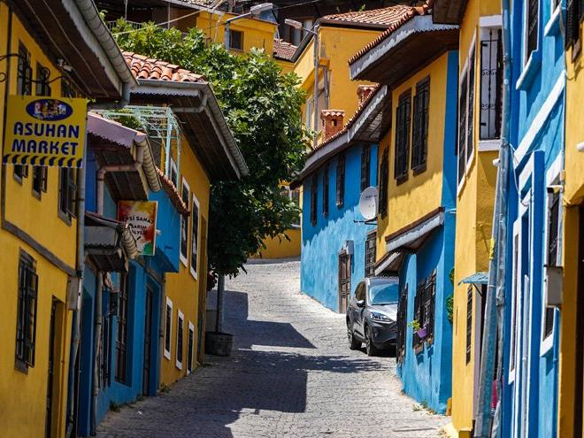
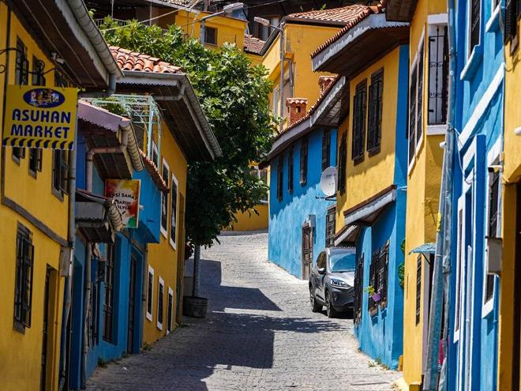

DENİZLİ
Denizli'nin Tarihi
Denizli şehri ilk defa, bugünkü şehrin 6 km kuzeyinde, Eskihisar Köyü civarında, Milattan önce 261 - 245 yılları arasında,
Seleukos Kralı ikinci Antiokhos tarafından kurulmuştur. II. Antiokhos kente karısı Laodikeia'nin adını vermiştir.
Laodike'nin kenti anlamına gelen "Laodikeia" adını alan kent, M. S. 7. yüzyılda büyük bir depremle yıkılınca,
kent bugünkü Kaleiçi mevkiine taşınmıştır. Türkler Denizli havalisini zapt ettikten sonra, kenti "Ladik" adıyla anmışlardır.
Denizli adına, tarihi kaynaklarda başka isimler olarak da rastlanır. Selçuklu kayıtları ve Denizli mahkemesi şer‘iyye sicilleri Ladik ismini vermektedir. İbni Batuta'nın seyahatnamesinde Tunguzlu denilmektedir. Mesalikullebsar'da da Tunguzlu olarak kaydedilmiştir.
Timurlenk'in zafernamesini yazan, Şerafettin Zemdi Tenguzlug ve Tonguzlug gibi iki isimden bahsetmektedir. Tengiz kelimesi eski Türkçede Deniz demektir. Tunguzlu ise bugünkü imlasıyla Denizli demektir. Netice olarak Denizli adı, Tenguzlu ve Tunguzlu kelimelerinin zamanla ağızdan ağza, Denizli kelimesi haline gelmesinden bugünkü şeklini almıştır. Denizlili araştırmacı Mümtaz Başkaya konu ile ilgili yazdığı kitabında, Denizli adının kökeninin Tengiz olduğunu ve bir boy adı olarak Orta Asya'dan Anadolu'ya geldiğini ileri sürmektedir. Ayrıca adı geçen bu kitabında Denizli adının kentte bulunan suların çokluğu ile ilgisinin bulunmadığını da çok gerçekçi biçimde açıklamıştır. Bu yer adının başka yerleşimlerin de adı olduğunu, Türkiye'de başka yerlerde de Denizli ve benzer türdeki adların olduğunu göstererek bu konuya gerçekçi bir açıklama getirmiş olmaktadır.
Denizli adına, tarihi kaynaklarda başka isimler olarak da rastlanır. Selçuklu kayıtları ve Denizli mahkemesi şer‘iyye sicilleri Ladik ismini vermektedir. İbni Batuta'nın seyahatnamesinde Tunguzlu denilmektedir. Mesalikullebsar'da da Tunguzlu olarak kaydedilmiştir.
Timurlenk'in zafernamesini yazan, Şerafettin Zemdi Tenguzlug ve Tonguzlug gibi iki isimden bahsetmektedir. Tengiz kelimesi eski Türkçede Deniz demektir. Tunguzlu ise bugünkü imlasıyla Denizli demektir. Netice olarak Denizli adı, Tenguzlu ve Tunguzlu kelimelerinin zamanla ağızdan ağza, Denizli kelimesi haline gelmesinden bugünkü şeklini almıştır. Denizlili araştırmacı Mümtaz Başkaya konu ile ilgili yazdığı kitabında, Denizli adının kökeninin Tengiz olduğunu ve bir boy adı olarak Orta Asya'dan Anadolu'ya geldiğini ileri sürmektedir. Ayrıca adı geçen bu kitabında Denizli adının kentte bulunan suların çokluğu ile ilgisinin bulunmadığını da çok gerçekçi biçimde açıklamıştır. Bu yer adının başka yerleşimlerin de adı olduğunu, Türkiye'de başka yerlerde de Denizli ve benzer türdeki adların olduğunu göstererek bu konuya gerçekçi bir açıklama getirmiş olmaktadır.
 
